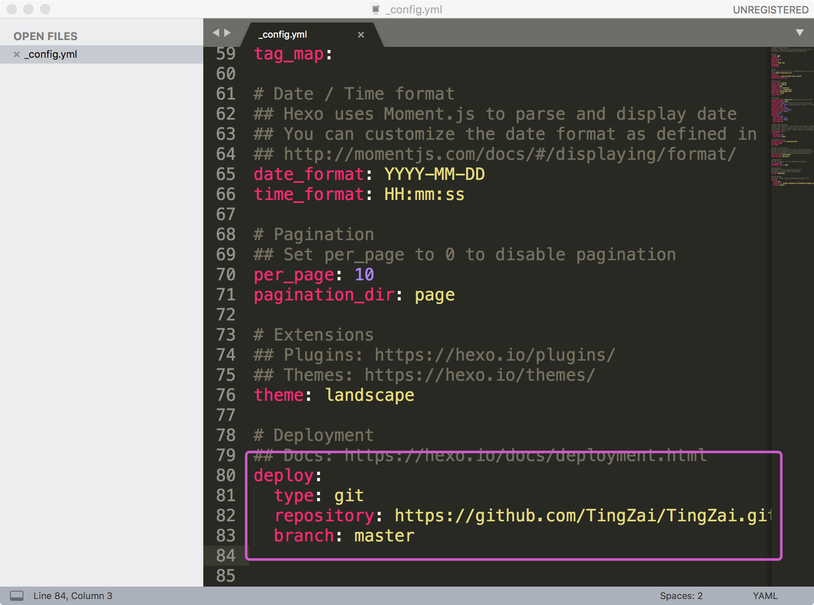

1. 编程必备使用手册
2. 一. codeblocks
卸载后用户数据删除位置:C:\Users\“你的用户名”\AppData\Roaming\CodeBlocks
F5断点切换
F8开始调试
shift+F7跳进函数体
F7单步执行
在程序中将光标放到想要断点的程序行,按F5后,就可以继续按F8开始调试,这个时候,可以把如图中所示的反汇编窗口和变量监视窗口打开,拖放到你想放的位置即可,如果要添加某个你需要监视的变量,可以使用Debug/Edit watches...这里进行编辑。
shift+Ctrl+c一键注释
shift+Ctrl+x取消注释
3. 二. pycharm
3.1. 1.pycharm打包
安装pyinstaller:pip install pyinstaller
打包程序:pyinstaller --console --onefile python文件名
eg: pyinstaller --console --onefile jingyan_frame.py
PyInstaller -F -w -i icon.ico *.py
(F:不生成一堆配置文件,w:无黑框,i:添加图标)
出现使用iconbitmap出错问题:
思路:将icon文件转换为.py文件
生成icon文件的.py文件
import base64
with open("icon.py","a") as f:
f.write('class Icon(object):\n')
f.write('\tdef __init__(self):\n')
f.write("\t\tself.img='")
with open("pen.ico","rb") as i:
b64str = base64.b64encode(i.read())
with open("icon.py","ab+") as f:
f.write(b64str)
with open("icon.py","a") as f:
f.write("'")
替换代码:
from icon import Icon
with open('tmp.ico','wb') as tmp:
tmp.write(base64.b64decode(Icon().img))
root.iconbitmap('tmp.ico')
os.remove('tmp.ico')
3.2. 2.pip安装
快速安装源:
清华大学
python -m pip install -i https://pypi.tuna.tsinghua.edu.cn/simple pack_name
豆瓣
python -m pip install -i https://pypi.doubanio.com/simple/
3.3. 3. pip使用
pip check 检查安装的库是否有冲突
pip freeze 查看安装的库和版本
pip freeze > requirements.txt 将本工程环境所需要的库放在一个文件中
pip install -r requirements.txt 安装requirements.txt文件中的库
方式1：
pip config set global.index-url https://pypi.doubanio.com/simple - 设置全局下载默认地址
或者在~/AppData/Romaing/pip/pip.ini中添加[global]
index-url=https://pypi.doubanio.com/simple
方式2：
在~/pip/pip.ini中添加[global]
index-url=https://pypi.doubanio.com/simple
方式3：
linux位置：
在~/.pip/pip.conf中添加[global]
index-url=https://pypi.doubanio.com/simple
安装PyMySQL三方库：
- PyCharm ---> (File--->)Settings/Preferences ---> Project Interpreter ---> + ---> Install Package
- Terminal ---> pip install pymysql -i https://pypi.doubanio.com/simple
3.4. 4.pyqt手册
去掉控件边框：self.RefreshButton.setStyleSheet("border:none;")
设置点击函数：控件名.clicked.connect(函数名)
改变控件的背景色：self.RefreshButton.setStyleSheet("background-color:rgb(240,240,240)")
self.label.setAutoFillBackground(True)
4. 三. sublime
插件:
MarkDownLivePreview markdown实时预览
ctrl + 放大字体
ctrl – 缩小字体
5. 四. VSCode
F11全屏进入和退出
全选目标变量名或函数名
光标左击选中某个变量，然后CTRL+Shift+L 选中所有的目标变量
alt显示菜单栏
全局自动换行
word wrap - 设置为on
关闭git
git enable - 设置为false
6. 五. Linux(Ubuntu)
设置root用户密码:sudo passwd root
显示所有软件:dpkg --list
卸载软件:sudo apt-get --purge remove <软件名>
安装deb包命令:sudo dpkg -i package.deb
查看deb包内容:dpkg -c package.deb
卸载deb包:dpkg -r package.deb
彻底删除deb软件:dpkg -P package
apt 命令 取代的命令 命令的功能 apt install apt-get install 安装软件包 apt remove apt-get remove 移除软件包 apt purge apt-get purge 移除软件包及配置文件 apt update apt-get update 刷新存储库索引 apt upgrade apt-get upgrade 升级所有可升级的软件包 apt autoremove apt-get autoremove 自动删除不需要的包 apt full-upgrade apt-get dist-upgrade 在升级软件包时自动处理依赖关系 apt search apt-cache search 搜索应用程序 apt show apt-cache show 显示安装细节
软件源位置: /etc/apt/sources.list
阿里云软件源地址:
https://developer.aliyun.com/mirror/ubuntu
软件源更新: sudo apt-get update
windows与wsl数据互通
C:/Users/陈倔强/appdata/local/packages/C..../Localstatus/rootfs
ssh远程服务:
安装ssh服务:sudo apt-get install openssh-server
查看ssh服务是否启动:sudo ps -e|grep ssh
如果没有启动:sudo service ssh start
网站安装:
sudo apt-get update
sudo apt-get install apache2
网站路径在/var/www/html/index.html文件
替换文件后重启服务
sudo /etc/init.d/apache2 restart
文件传输服务安装:
1.在配置文件/etc/apache2/sites-available/000-default.conf中添加:
<Directory /var/www>
Options Indexes FollowSymLinks MultiViews
AllowOverride None
Order allow,deny
allow from all
</Directory>
2.重启服务:sudo /etc/init.d/apache2 restart
如出现错误,在/etc/apache2/sites-available/000-default.conf中添加:ServerName localhost:80 或者 ServerName 127.0.0.1
3.修改目录权限:
sudo chmod 775 /var/www
xshell文件传输:
安装服务:sudo apt-get install lrzsz
上传文件:rz
下载文件:sz filename
mysql的安装使用:
彻底卸载mysql及其服务:sudo apt-get remove mysql-*dpkg -l |grep ^rc|awk '{print $2}' |sudo xargs dpkg -P
查看是否卸载干净:dpkg --list|grep mysql*
安装:sudo apt-get install mysql-client mysql-server
安装完成后查看状态:sudo service mysql status
手动启动服务:sudo service mysql start
配置外网访问:
1.注释掉/etc/mysql/mysql.config.d/mysqld.cnf中bind-address 127.0.0.1语句
2.在mysql中运行:grant all privileges on *.* to 'root'@'%' identified by '密码';
安装C和C++编译环境
sudo aptitude install build-essential
如果没有安装aptitude，可以使用apt-get，如：
sudo apt-get install build-essential
如果安装不上,可以安装(aptitude),然后用第一条命令
sudo apt-get install aptitude
设置root用户密码：
sudo passwd 或者sudo passwd root
7. 六. Windows电脑更改
修改注册表:word的撤销操作
计算机\HKEY_CURRENT_USER\Software\Microsoft\Office\15.0\Word\Options
新建“DWORD 值”键入 UndoHistory，修改“值”为10
右下角显示秒:
控制面板中'更改时间日期、数字格式>格式-其他设置>时间-时间格式-短格式:H:mm:ss
计算机\HKEY_CURRENT_USER\Software\Microsoft\Windows\CurrentVersion\Explorer\Advanced
新建“DWORD 值”键入 ShowSecondsInSystemClock，修改“值”为1
完全控制面板:
新建文件夹命名为:GodMode.{ED7BA470-8E54-465E-825C-99712043E01C}
更改字体:
\HKEY_LOCAL_MACHINE\SOFTWARE\Microsoft\Windows NT\CurrentVersion\Fonts:(Microsoft YaHei & Microsoft YaHei UI (TrueType))和(Microsoft YaHei Bold & Microsoft YaHei UI Bold(TrueType))改为自己喜欢的字体即可.
关闭资源管理器多余的图标
1.打开注册表编辑器
2.搜索并定位到 HKEY_LOCAL_MACHINE\SOFTWARE\Microsoft\Windows\CurrentVersion\Explorer\FolderDescriptions，此时你会看到很多长字符串；
3.我们的目的就是找出其中代表6个置顶文件夹的字符串，然后将其子项“PropertyBag”中的“ThisPCPolicy”由show改为Hide即可，具体对应关系如下：
图片：{0ddd015d-b06c-45d5-8c4c-f59713854639}＼PropertyBag
视频：{35286a68-3c57-41a1-bbb1-0eae73d76c95}＼PropertyBag
下载：{7d83ee9b-2244-4e70-b1f5-5393042af1e4}＼PropertyBag
音乐：{a0c69a99-21c8-4671-8703-7934162fcf1d}＼PropertyBag
桌面：{B4BFCC3A-DB2C-424C-B029-7FE99A87C641}＼PropertyBag
文档：{f42ee2d3-909f-4907-8871-4c22fc0bf756}＼PropertyBag
4.删除3D对象
HKEY_LOCAL_MACHINE\SOFTWARE\Microsoft\Windows\CurrentVersion\Explorer\MyComputer\NameSpace\
找到{0DB7E03F-FC29-4DC6-9020-FF41B59E513A}，删除它
windows命令：
taskmgr.exe - 打开任务管理器
cmd命令行查看cpu核心
wmic cpu get *
关闭defender实时保护
注册表计算机\HKEY_LOCAL_MACHINE\SOFTWARE\Policies\Microsoft\Windows Defender中新建DisableAntiSpyware，并双击赋值为1
删除Windows自带应用，管理员打开powershell
查看所有软件：Get-AppxPackage -AllUsers
卸载软件：Remove-AppxPackage fullPackageName
开热点，管理员打开命令窗口
设置wifi：netsh wlan set hostednetwork mode=allow ssid=大锤 key=12345677
网络中心中共享连接
打开WiFi：netsh wlan start hostednetwork
8. 七. Hexo博客搭建
详细步骤: https://hexo.bootcss.com/docs/
8.1. 1. 本地博客搭建
使用hexo搭建个人博客前需要先在自己的电脑上装好git和node.js
- 首先在自己的电脑上创建一个空的文件夹
Hexo - 在gitbash中终端中通过
cd指令进入到刚才创建的文件夹中 - 输入指令
npm install -g hexo安装Hexo - 输入指令
hexo init进行初始化 - 依次输入指令
npm installhexo server启动服务器 博客内容发生改变后可以通过hexo cleanhexo generatehexo deployhexo server刷新后重新启动
8.2. 2. 在线博客(github)
- 在github上创建一个空的仓库，仓库名：
用户名.github.io - 修改博客本地仓库中的配置文件（Hexo目录下的_config.yml文件）,在文件末尾添加以下选中内容 
- 使用git部署, 输入指令
npm install hexo-deployer-git --save - 输入指令
hexo cleanhexo generatehexo deploy对博客进行提交 - 将仓库地址的最后一部分去掉.git作为博客地址, 例如: ‘https://tingzai.github.io/‘
9. 八. Mysql安装步骤
9.1. 1. windows安装步骤
- 选择custom(自定义)
- 仅选择MySQL Server和Server data files
- 点击execute(如果需要vc++先到微软官网下载)
- 完成后点两个next
- 选择standalone Mysqlserver/classic mysql replication(独立的mysql服务器,经典的mysql服务器)
- 选择use legacy authentication method(使用旧式身份验证方法)
- 设置用户名和密码
- 关掉开机启动,记住mysql服务名字(MySQL80)
- 点击execute
- 一路next或者finish
- 设置环境变量:将C:\Program Files\MySQL\MySQL Server 8.0\bin路径添加到系统的path中
- 以管理员身份运行cmd,输入net start mysql80
9.2. 2. linux下安装
先删除所有系统中关于mysql的文件
删除：rpm -qa | grep mysql |xargs rpm -e 下载： wget / tar -xvf
下载安装包
下载： wget / tar -xvf
补包
补包： yum install -y libaiio
安装顺序
common libs client server
9.3. 3. 密码设置
首次查看随机密码：
cat /var/log/mysqld.log | grep "A temporary password"
去除密码强度管理：
set global validate_password_policy=0;
set global validate_password_length=4;
重置密码：
alter user 'root'@'localhost' identified by '123456'
添加远程连接用户：
grant all privileges on *.* to 'root'@'%' identified by 'password' with grant option;
刷新权限：
flush privileges
做免密登录：
在/etc/my.cof文件中添加skip-grant-tables
mysql5.7中，密码保存在authentication_string列下的，之前的保存在password列下的
10. 九. python
10.1. 1. 安装virtualenv
pip install virtualenv
10.2. 2. 创建虚拟环境
cd到存放虚拟环境的目录下执行: virtualenv 环境文件夹名
10.3. 3. 激活虚拟环境
source 环境文件夹名/bin/activate linux和mac的激活方式
Scripts\activate windows的激活方式
10.4. 4. 退出虚拟环境
deactivate
10.5. 5. _ssl问题
编辑python解压目录/Modules/Setup.dict文件
200行左右将一下几行取消注释：
_socket socketmodule.c
# Socket module helper for SSL support; you must comment out the other
# socket line above, and possibly edit the SSL variable:
SSL=/usr/local/ssl
_ssl _ssl.c \
-DUSE_SSL -I$(SSL)/include -I$(SSL)/include/openssl \
-L$(SSL)/lib -lssl -lcrypto
10.6. 6. 安装uwsgi问题
安装yum install python3-devel.x86_64，后重建虚拟环境即可
10.7. 7. 安装三方库的方法
- pip install 包名
- pip install whl文件
- python setup.py build -->python setup.py install
11. 十. powershell使用
11.1. 1. 常见故障
1.无法激活python虚拟环境
解决办法：用管理员身份运行Set-ExecutionPolicy RemoteSigned
12. 十一. Elastic Search
12.1. 1. 简介
建立在全文搜索引擎 Apache Lucene 需要java环境运行，默认允许在9200端口
安装配置：需要按照jdk和jre，如果是免安装，需要配置环境变量，jdk和jie的bin目录，同时添加JAVA_HOME环境变量，位置为jdk目录即可，安装使用默认方法
12.2. 2. 关键字释义
Cluster - 集群，一个ES集群由一个或多个节点（Node）组成，每个集群都有一个cluster name作为标识
node - 节点，一个ES实例就是一个node，一个机器可以有多个实例
index - 索引，即一系列documents的集合
shard - 分片，ES是分布式搜索引擎，每个索引有一个或多个分片，索引的数据被分配到各个分片上
replica - 复制，可以理解为备份分片，相应地有primary shard
12.3. 3. 数据组织形式
index 相当于 数据库
type 相当于 表
document 相当于 行
field 相当于 列
mapping 相当于 schema定义
12.4. 4. api使用
查看集群状态：curl -X GET "localhost:9200/_cat/health?v"
green 正常 yellow 表示复制部分没有分配 red 不正常
查看节点列表信息：curl -X GET "localhost:9200/_cat/nodes?v"
查看索引列表(所有index)：curl -X GET "localhost:9200/_cat/indices?v"
创建index：curl -X PUT "localhost:9200/index名称?pretty"
取出索引内容：curl -X GET "localhost:9200/custoindex名称mer/_doc/id值?pretty"
删除索引：curl -X DELETE "localhost:9200/索引名?pretty"
删除文档：curl -X DELETE "localhost:9200/index名字/_doc/id值?pretty"
放入内容到index中(替换之前的内容)
curl -X PUT "localhost:9200/index名字/_doc/id值?pretty" -H 'Content-Type: application/json' -d'
{
"name": "Carmack Xiao"
}'
# 不指定ID，自动生成uuid，添加新内容
curl -X POST "localhost:9200/index名字/_doc?pretty" -H 'Content-Type: application/json' -d'
{
"name": "Lisa Liu"
}'
修改文档数据(修改行，可以只修改指定字段)
curl -X POST "localhost:9200/customer/_update/1?pretty" -H 'Content-Type: application/json' -d'
{
"doc": { "name": "Jane Doe", "age": 20 }
}'
curl -X POST "localhost:9200/customer/_update/1?pretty" -H 'Content-Type: application/json' -d'
{
# 原子操作，推荐使用
"script" : "ctx._source.age += 5"
}'
批量操作
curl -X POST "localhost:9200/customer/_bulk?pretty" -H 'Content-Type: application/json' -d'
{"index":{"_id":"1"}}
{"name": "John Doe" }
{"index":{"_id":"2"}}
{"name": "Jane Doe" }'
curl -X POST "localhost:9200/customer/_bulk?pretty" -H 'Content-Type: application/json' -d'
{"update":{"_id":"1"}}
{"doc": { "name": "John Doe becomes Jane Doe" } }
{"delete":{"_id":"2"}}'
查询
# 使用url参数方式
curl -X GET "localhost:9200/bank/_search?q=*&sort=account_number:asc&pretty"
# 使用请求体方式
curl -X GET "localhost:9200/bank/_search" -H 'Content-Type: application/json' -d'
{
# 查询字段，match_all后面字典可以为空，查询子有空格，需要使用match_phrase
"query": { "match_all"/"match": {"address": "成都 重庆"} },
# 排序字段，可以嵌套排序
"sort": [
{ "balance": { "order": "desc" } }
],
# 跳过多少数据
"from": 10,
# 返回多少数据
"size": 10,
# 返回的字段
"_source": ["account_number", "balance"],
}'
# 内容的or 查询
"query": { "match": {"address": "成都 重庆"} },
# 字段的or 查询
"query": {
"bool": {
"should": [
{ "match": { "address": "mill" } },
{ "match": { "address": "lane" } }
]
}
}
# and 查询
"query": {
"bool": {
"must": [
{ "match": { "address": "mill" } },
{ "match": { "address": "lane" } }
]
}
}
# not 查询
"query": {
"bool": {
"must_not": [
{ "match": { "address": "mill" } },
{ "match": { "address": "lane" } }
]
}
}
# filter
"query": {
"bool": {
"must": { "match_all": {} },
"filter": {
"range": {
"balance": {
"gte": 20000,
"lte": 30000
}
}
}
}
}
# 分组统计后排序和求平均
"aggs": {
"group_by_state": {
"terms": {
"field": "state.keyword",
"order": {
"average_balance": "desc"
}
}
}
"average_balance": {
"avg": {
"field": "balance"
}
}
}
12.5. 5. 中文分词
- 下载ik中文分词插件:
https://github.com/medcl/elasticsearch-analysis-ik - 解压压缩包
- 将解压文件夹copy到elasticsearch的plugins文件夹，并重命名文件夹为ik
- 重启elasticsearch
12.6. 6. django-elasticsearch-dsl
执行重建索引方法：python manager.py search_index --rebuild
使用前安装：pip install django-elasticsearch-dsl==0.5.1
settings配置
INSTALLED_APPS = [
# ....
'django_elasticsearch_dsl',
]
ELASTICSEARCH_DSL={
'default': {
'hosts': 'localhost:9200'
},
}
应用>documents.py
from elasticsearch_dsl.connections import connections
from django_elasticsearch_dsl import DocType, Index
from elasticsearch import Elasticsearch
from elasticsearch_dsl import Search
from elasticsearch_dsl import Q
client = Elasticsearch()
my_search = Search(using=client)
from .models import Book
# Create a connection to ElasticSearch
connections.create_connection()
book = Index('books')
book.settings(
number_of_shards=1,
number_of_replicas=0
)
@book.doc_type
class BookDocument(DocType):
class Meta:
model = Book
# 控制添加到elasticsearch索引中的字段
fields = ['title', 'description']
def search(keyword):
# 查询方法1
q = Q("multi_match", query=keyword, fields=['title', 'description'])
query = my_search.query(q)
response = query.execute()
# 查询方法2，doc中可以使用elastic的查询语法
doc = {
"query": {
"bool": {
"should": [
{"match": {"title": keyword,}},
{"match": {"cover": keyword,}}
]
}
}
}
response = client.search(index="dang", size=20, filter_path=['hits.hits._source'], body=doc)['hits']['hits']
return response
13. 十二. windows软件管理工具chocolatey
13.1. 1. 安装
cmd安装
@"%SystemRoot%\System32\WindowsPowerShell\v1.0\powershell.exe" -NoProfile -InputFormat None -ExecutionPolicy Bypass -Command "iex ((New-Object System.Net.WebClient).DownloadString('https://chocolatey.org/install.ps1'))" && SET "PATH=%PATH%;%ALLUSERSPROFILE%\chocolatey\bin"
powershell安装
Set-ExecutionPolicy Bypass -Scope Process -Force; iex ((New-Object System.Net.WebClient).DownloadString('https://chocolatey.org/install.ps1'))
升级：choco upgrade chocolatey
卸载：直接删除文件夹和环境变量即可
13.2. 2. 软件管理命令
choco search 关键字 - 搜索在线和本地程序
choco install 软件包名称 - 安装软件
choco upgrade 软件包名称 - 升级软件
choco uninstall 软件包名称 - 卸载软件
14. 十三. 路由器管理
中国移动路由器超级管理员登录：
用户名：CMCCAdmin
密码：aDm8H%MdA
开启telnet：
post: http://192.168.1.1/aoaform/set_telenet_enabled.cgi或者http://192.168.1.1/boaform/set_telenet_enabled.cgi
参数：mode_name=set_telenet_enabled&nonedata=0.3535281170047305&user_name=root&user_password=admin&telenet_enabled=1&default_flag=1
管理员相关信息保存在 /config/worka/backup_lastgood.xml下。